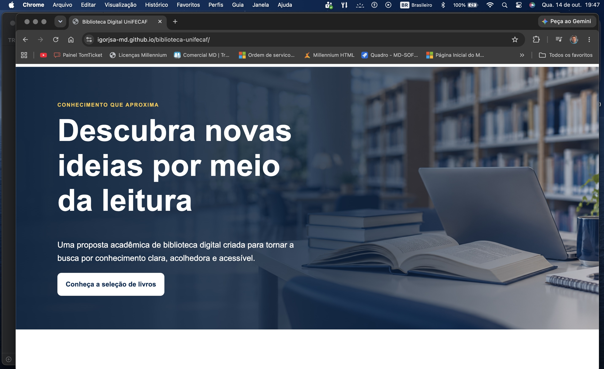

Relatório — Biblioteca Digital UniFECAF
1. Introdução e objetivo
Este projeto apresenta uma interface acadêmica para a Biblioteca Digital UniFECAF. O objetivo foi aplicar HTML5 e CSS3 na criação de uma página moderna, responsiva e acessível, mantendo o código legível para estudantes iniciantes. A página não possui backend nem simula empréstimos, autenticação ou consulta a um catálogo ativo.
2. Análise do problema
O problema propõe transformar uma estrutura inicial de baixa fidelidade em uma experiência visual consistente. Além de organizar grande quantidade de conteúdo, a solução deve continuar legível em celulares, tablets e computadores. Também é necessário diferenciar conteúdo demonstrativo de informações institucionais reais, evitando dados inventados.
3. Análise do protótipo de baixa fidelidade
O protótipo da página 3 apresenta uma página única e vertical. No topo há uma barra de navegação seguida por um banner. Depois aparecem a apresentação da biblioteca, com textos, imagem central e quatro destaques; um segundo banner visual; seis cards de livros em duas fileiras; três blocos de unidades formados por imagem e texto; e uma área final de contato.
Essa hierarquia foi mantida no index.html. A implementação reúne os dois momentos visuais do protótipo em um banner principal e reaproveita seu recorte na seção “Sobre”, evitando uma imagem decorativa repetida sem conteúdo. Os seis livros permanecem organizados em duas fileiras de três cards no desktop. As três unidades seguem o formato horizontal de imagem e texto, com alternância visual na segunda faixa. Cores, tipografia, conteúdo e dimensões foram refinados porque o protótipo define estrutura, não acabamento final.
4. Público-alvo
O público principal é composto por estudantes universitários que acessam conteúdo acadêmico em computadores e dispositivos móveis. A interface também considera pessoas com baixa visão, mobilidade reduzida ou navegação por teclado por meio de contraste, foco visível, áreas de toque e estrutura semântica.
5. Paleta de cores
As cores foram declaradas como variáveis no seletor :root:
| Variável | HEX | Uso |
|---|---|---|
--azul-900 | #082F58 | Títulos, banner e contato |
--azul-800 | #0B477D | Marca e links |
--azul-600 | #0878BD | Rótulos e destaques |
--azul-100 | #DFF3FF | Estados suaves de interação |
--amarelo | #F4C542 | Foco e detalhe complementar |
--branco | #FFFFFF | Fundos e texto sobre azul |
--cinza-050 | #F7F9FC | Fundo alternado |
--cinza-200 | #DCE3EA | Bordas |
--cinza-600 | #52606D | Textos secundários |
--cinza-900 | #17212B | Texto principal |
Não havia material oficial de marca disponível no projeto. Foi usada uma aproximação em azul, documentada aqui, sem afirmar reprodução exata da identidade institucional.
6. Tipografia
A pilha Arial, Helvetica, sans-serif foi escolhida por ser legível, amplamente disponível e dispensar dependências externas. Os títulos usam tamanhos fluidos com clamp(), enquanto o corpo mantém 1rem e entrelinha de 1.65.
7. Decisões visuais
O azul cria unidade e associação com ambiente acadêmico. O amarelo aparece apenas como detalhe para manter equilíbrio e boa identificação do foco. Cards brancos, bordas discretas, sombras suaves e cantos arredondados separam conteúdos sem excesso decorativo. A imagem do banner possui área vazia à esquerda para preservar a leitura do título.
8. Seções do site
- Cabeçalho: marca textual e menu com links internos.
- Banner: apresenta o objetivo do projeto e conduz à seleção de livros.
- Sobre: explica o caráter demonstrativo e mostra quatro benefícios.
- Livros: reúne seis obras reais em domínio público.
- Unidades: usa três blocos conceituais, sem nomes ou endereços inventados.
- Contato: orienta o visitante para o site oficial e informa que não há serviço ativo.
- Rodapé: identifica a atividade acadêmica.
9. Estrutura HTML e CSS
O HTML usa header, nav, main, section, article e footer. Cada seção tem título associado por aria-labelledby. O CSS fica separado em css/style.css, com variáveis, estilos base, componentes e media queries organizados nessa ordem. As imagens locais estão em assets/imagens/.
10. Responsividade
A base foi escrita para smartphones. A partir de 40rem, livros e benefícios passam a duas colunas, enquanto as unidades assumem faixas horizontais com imagem e texto. A partir de 64rem, livros passam a três colunas, benefícios a quatro e a seção “Sobre” divide imagem e texto. Larguras relativas, clamp(), min() e imagens com largura máxima impedem estouro horizontal.
Os pontos de conferência indicados foram 375 px, 768 px e 1440 px. A validação estrutural confirmou caminhos, arquivos e adaptação do layout. Capturas das versões desktop e smartphone são apresentadas ao final deste relatório.
11. Acessibilidade
Foram aplicados idioma pt-BR, meta viewport, texto alternativo, hierarquia de títulos, link “Pular para o conteúdo”, foco visível, links descritivos, alvos de toque, contraste e navegação nativa por teclado. Links externos avisam leitores de tela sobre a abertura em nova aba. prefers-reduced-motion remove a rolagem suave quando o usuário prefere menos movimento.
12. Questão central
Transformar um protótipo de baixa fidelidade em uma interface moderna exige preservar sua hierarquia, mas desenvolver um sistema visual consistente. Neste projeto, isso ocorreu pela definição de variáveis de cor, componentes reutilizáveis, hierarquia tipográfica e grades que mudam conforme o espaço. A identidade aproximada foi aplicada com azul e elementos acadêmicos, enquanto semântica e media queries garantiram acesso em diferentes contextos.
13. Considerações finais
O resultado demonstra que HTML e CSS são suficientes para produzir uma página organizada e responsiva. O principal aprendizado foi conciliar aparência, simplicidade do código, fidelidade à estrutura do protótipo e transparência sobre os limites de uma demonstração. O site foi publicado no GitHub Pages, e sua apresentação em vídeo foi disponibilizada para avaliação.
14. Referências
- MOZILLA DEVELOPER NETWORK. HTML: HyperText Markup Language. Disponível em: <https://developer.mozilla.org/pt-BR/docs/Web/HTML>. Acesso em: 14 out. 2026.
- MOZILLA DEVELOPER NETWORK. CSS: Cascading Style Sheets. Disponível em: <https://developer.mozilla.org/pt-BR/docs/Web/CSS>. Acesso em: 14 out. 2026.
- W3C. Web Content Accessibility Guidelines (WCAG) 2.2. Disponível em: <https://www.w3.org/TR/WCAG22/>. Acesso em: 14 out. 2026.
- BRASIL. Portal Domínio Público. Disponível em: <https://www.dominiopublico.gov.br/>. Acesso em: 14 out. 2026.
- UNIFECAF. Site oficial. Disponível em: <https://www.unifecaf.com.br/>. Acesso em: 14 out. 2026.
- UNIFECAF. Trabalho — Design Web. Documento da atividade e protótipo de baixa fidelidade, 7 páginas. Material fornecido na disciplina.
Capturas do projeto

Fonte: elaboração própria (2026).
Fonte: elaboração própria (2026).